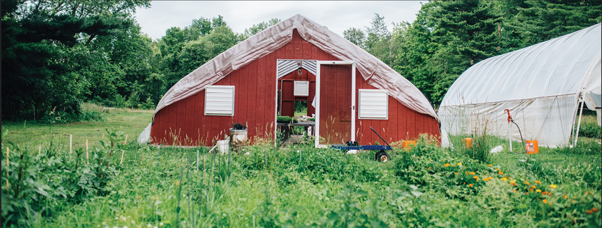
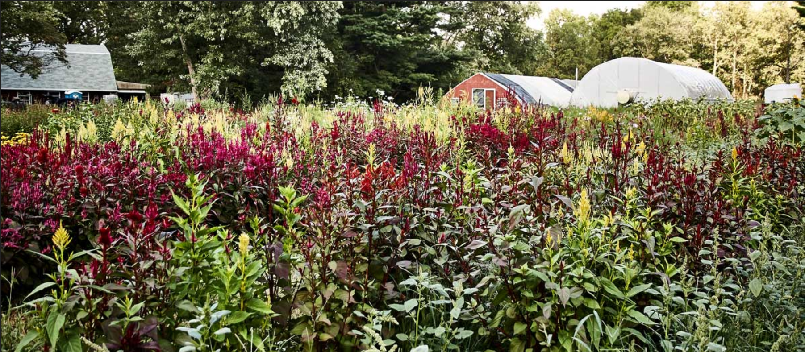
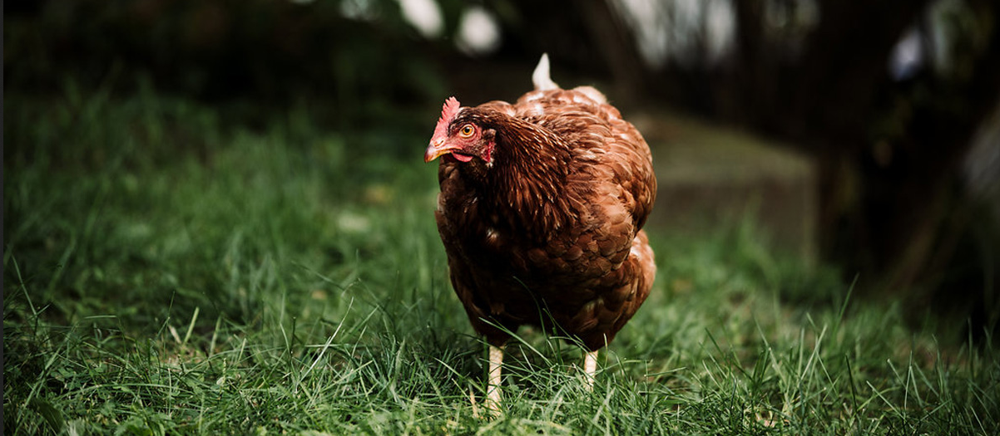
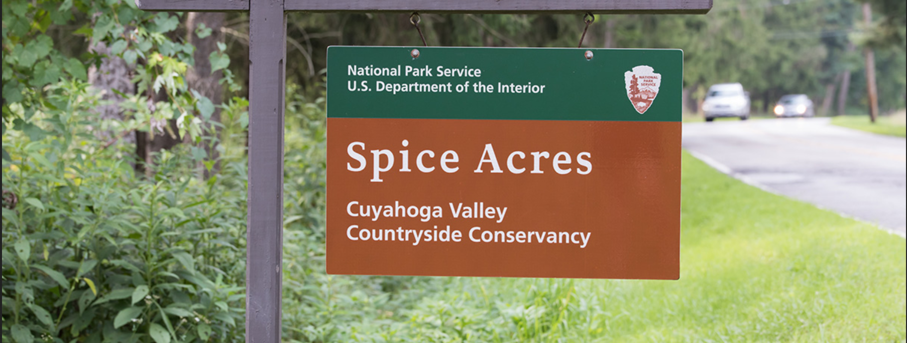

Contents
- 22 weeks of fresh produce (4–5 items/week)
- 10 weeks: 1 dozen eggs
- 12 weeks: breads + spreads (alternating with eggs)
- 12 weeks: fresh-cut flowers
- Thanksgiving box finale
Cuyahoga Valley National Park
Spice Acres is a 13-acre family farm and the test kitchen playground for Spice Kitchen + Bar’s award-winning team. We grow sustainably inside Cuyahoga Valley National Park and share the harvest with our community.

Heirloom vegetables, flowers, free-range hens, and the farm dogs who keep watch. We farm with biodiversity and soil health at the core.




Family-friendly gatherings, yoga in the fields, u-pick flowers, and the famed Plated Landscapes™ dinners with Spice Catering.
Recipes, breads, and spreads from our award-winning culinary team. Seasonal menus inspired by the farm.
Special restaurant and catering events across the farm and region. Early ticket access for members.
Partners in sustainable agriculture inside Cuyahoga Valley National Park. The Conservancy’s land use program preserves the rural character of the valley by rehabilitating farms—including ours.
Saturday farmers markets, grower classes, and community programs keep the valley vibrant. Learn more via Countryside Conservancy.
The farm doesn’t have a phone, but we check email often.
9557 Riverview Road
Brecksville, OH 44141
Reservations by phone or Yelp.
216.961.9637
hello@spicekitchenandbar.com
5800 Detroit Avenue
Cleveland, OH 44102
Events, tours, classes, sponsorships.
216.432.9090
hello@spicecaters.com